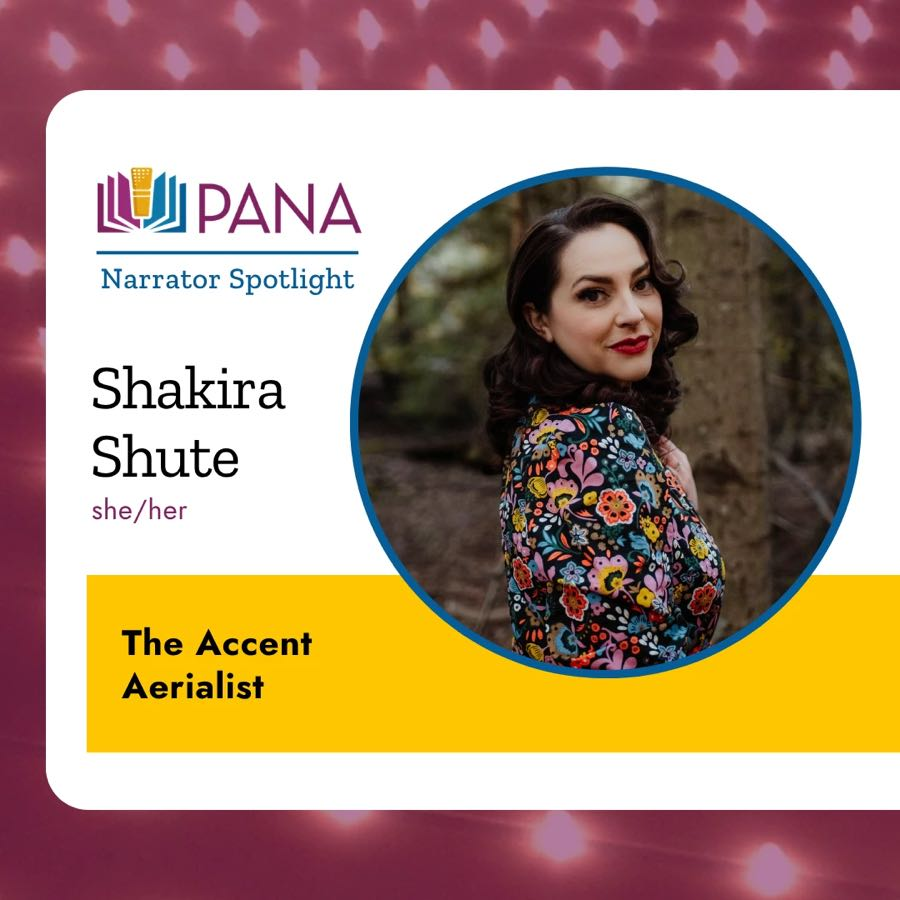
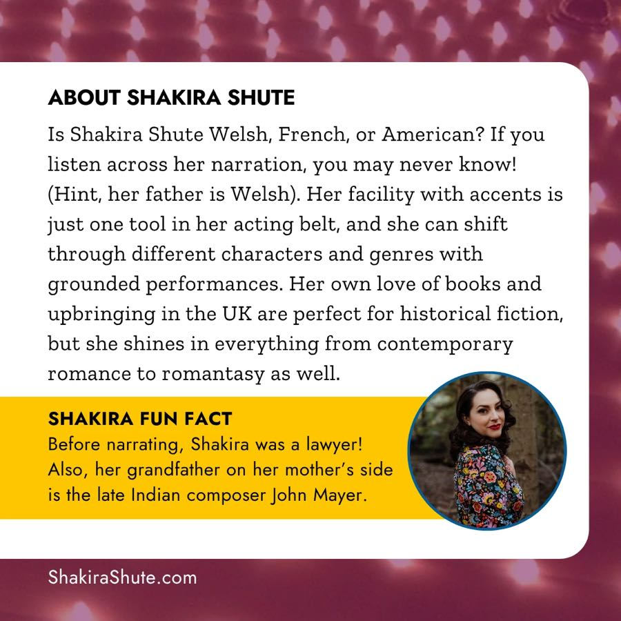

Voice Arts® Awards
Outstanding Audiobook Narration — Thriller
The Cottage by the Sea by Keri Beevis
✦ Nominee · 2026 ✦Shakira is a multi-award nominated narrator, known for her skills and versatility with characters and accents.
The Cottage by the Sea by Keri Beevis
✦ Nominee · 2026 ✦Curious Tides by Pascale Lacelle
✦ Nominee · 2024 ✦Narrating as Evelyn Rose
Visit Evelyn Rose →Meet Me Under the Mistletoe by Jenny Bayliss
Produced by Penguin Random House · USA/Canada voices
✦ Nominee ✦A Crown of Ivy and Glass by Claire Legrand
Narrated as Evelyn Rose
Visit Evelyn Rose →Commercial Reel
Produced by Tanya Rich
✦ Nominee · 2022 ✦

“Is Shakira Shute Welsh, French, or American? If you listen across her narration, you may never know!”
✦ Featured narrator ✦